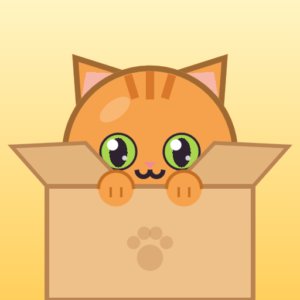

Meowtain – Privacy Policy
Who we are
Meowtain is a mobile game made by Yellow Turtle Games, an independent developer based in Poland (European Union). Contact: yellowturtle80@gmail.com
What the game stores
Your game progress (score, best score, cats in your album, missions, fish and settings) is saved on your device. We have no user accounts of our own and we do not collect, sell or share your personal data ourselves.
- Android backup: if backup is turned on for your Google account, Android may back up your game progress to your Google account and restore it when you reinstall the game or switch phones. This is handled by Google; we cannot see it.
- Google Play Games (optional): if you use Google Play Games, the game uses it to sign you in automatically, save your progress in the cloud (Saved Games) and show leaderboards and achievements. Your Play Games profile and scores are visible to other players according to your Play Games settings. This data is processed by Google under the Google Privacy Policy.
- Game settings file: when the game starts, it downloads a small settings file (daily missions, rewards) from our website (yellowturtlegames.github.io, hosted by GitHub). No game data or personal data is sent with this request; as with any internet request, the hosting provider (GitHub) receives your IP address.
- Ratings: the game may show Google Play's rating window. Your rating and review go directly to Google Play.
Uninstalling the game deletes the data on your device. Cloud copies can be deleted in your Google account and Play Games settings.
Advertising (Google AdMob)
The game is free and shows ads provided by Google AdMob. To show and measure ads and to prevent fraud, Google may collect and process data such as your device's advertising ID, IP address, approximate location, device information and how you interact with ads. Google's use of this data is described here: How Google uses information from sites or apps that use its services.
- Consent (EEA, UK, Switzerland): before ads are shown, the game asks for your consent using Google's consent tool. You can change your choice at any time via Settings → Privacy settings.
- Personalised ads: you can reset or delete your advertising ID in your Android settings (Settings → Privacy → Ads).
Children
Meowtain is suitable for all ages (PEGI 3) but is not directed at children under 13. When the game is first opened it asks for your age. Your age is saved with your game progress on your device (and in your Android backup, if turned on); the game never sends it to us or to Google's ad services. It is used only to choose suitable ads: players under 18 see only ads suitable for children, without personalisation, and for players under 13 ads are also requested as child-directed. We do not knowingly collect personal data from children.
Your rights
Under the GDPR you have the right to access, correct, delete or restrict the processing of your personal data and to withdraw consent. Because we do not store your personal data ourselves, requests about advertising data are handled by Google; you are also welcome to contact us at the address above. You may lodge a complaint with a data protection authority (in Poland: UODO, uodo.gov.pl).
Changes
If this policy changes, we will update this page and its effective date.
Biz kimiz
Meowtain, Polonya'da (Avrupa Birliği) yaşayan bağımsız geliştirici Yellow Turtle Games tarafından yapılmış bir mobil oyundur. İletişim: yellowturtle80@gmail.com
Oyunun sakladıkları
Oyun ilerlemen (skor, rekor, albümdeki kediler, görevler, balıklar ve ayarlar) cihazında saklanır. Kendi kullanıcı hesap sistemimiz yoktur; kişisel verilerini kendimiz toplamaz, satmaz ve paylaşmayız.
- Android yedeklemesi: Google hesabında yedekleme açıksa Android, oyun ilerlemeni Google hesabına yedekleyebilir ve oyunu yeniden yüklediğinde ya da telefon değiştirdiğinde geri getirebilir. Bunu Google yapar; biz göremeyiz.
- Google Play Games (isteğe bağlı): Google Play Games kullanıyorsan oyun onunla seni otomatik olarak bağlar, ilerlemeni buluta kaydeder (Kayıtlı Oyunlar) ve sıralama tablosu ile başarımları gösterir. Play Games profilin ve skorların, Play Games ayarlarına göre diğer oyunculara görünür. Bu verileri Google, Google Gizlilik Politikası kapsamında işler.
- Oyun ayar dosyası: oyun açılırken internet sitemizden (yellowturtlegames.github.io, GitHub'da barınıyor) küçük bir ayar dosyası (günlük görevler, ödüller) indirir. Bu istekle hiçbir oyun verisi ya da kişisel veri gönderilmez; her internet isteğinde olduğu gibi barındırma hizmeti (GitHub) IP adresini görür.
- Değerlendirme: oyun Google Play'in değerlendirme penceresini gösterebilir. Verdiğin puan ve yorum doğrudan Google Play'e gider.
Oyunu silmek cihazındaki verileri siler. Buluttaki kopyalar Google hesabı ve Play Games ayarlarından silinebilir.
Reklamlar (Google AdMob)
Oyun ücretsizdir ve Google AdMob reklamları gösterir. Reklamları göstermek, ölçmek ve sahtekârlığı önlemek için Google; cihazının reklam kimliği, IP adresi, yaklaşık konumu, cihaz bilgileri ve reklamlarla etkileşimin gibi verileri toplayabilir. Google'ın bu verileri nasıl kullandığı: Google, hizmetlerini kullanan site ve uygulamalardaki bilgileri nasıl kullanır.
- İzin (AEA, Birleşik Krallık, İsviçre): reklamlar gösterilmeden önce oyun, Google'ın izin aracıyla iznini ister. Seçimini istediğin zaman Ayarlar → Gizlilik ayarları bölümünden değiştirebilirsin.
- Kişiselleştirilmiş reklamlar: reklam kimliğini Android ayarlarından sıfırlayabilir ya da silebilirsin (Ayarlar → Gizlilik → Reklamlar).
Çocuklar
Meowtain her yaşa uygundur (PEGI 3) ancak 13 yaşından küçük çocuklara yönelik değildir. Oyun ilk açıldığında yaşını sorar. Yaşın oyun ilerlemenle birlikte cihazında (ve açıksa Android yedeğinde) saklanır; oyun onu bize ya da Google'ın reklam hizmetlerine hiçbir zaman göndermez. Yalnızca uygun reklamları seçmek için kullanılır: 18 yaşından küçük oyunculara sadece çocuklara uygun, kişiselleştirilmemiş reklamlar gösterilir; 13 yaşından küçükler için reklamlar ayrıca çocuklara yönelik olarak istenir. Çocuklardan bilerek kişisel veri toplamayız.
Hakların
GDPR kapsamında kişisel verilerine erişme, düzeltme, silme, işlenmesini kısıtlama ve iznini geri çekme hakların vardır. Kişisel verilerini kendimiz saklamadığımız için reklam verileriyle ilgili talepler Google tarafından yanıtlanır; yine de yukarıdaki adresten bize yazabilirsin. Bir veri koruma otoritesine şikâyette bulunabilirsin (Polonya'da: UODO, uodo.gov.pl).
Değişiklikler
Bu politika değişirse bu sayfayı ve yürürlük tarihini güncelleriz.